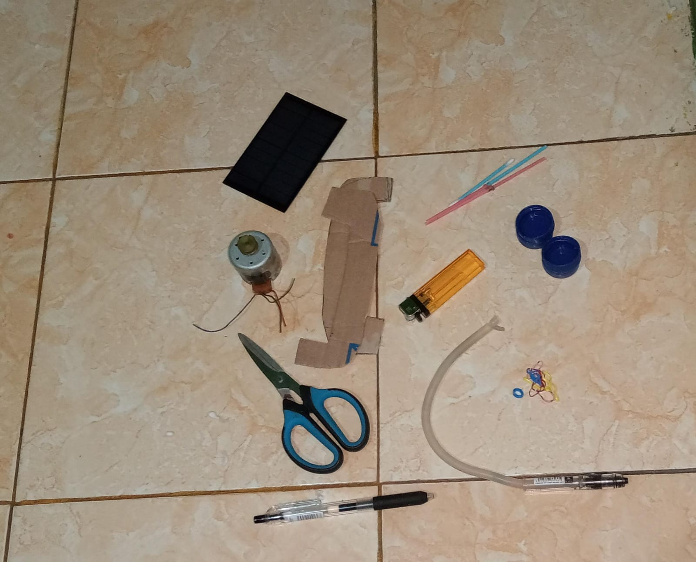
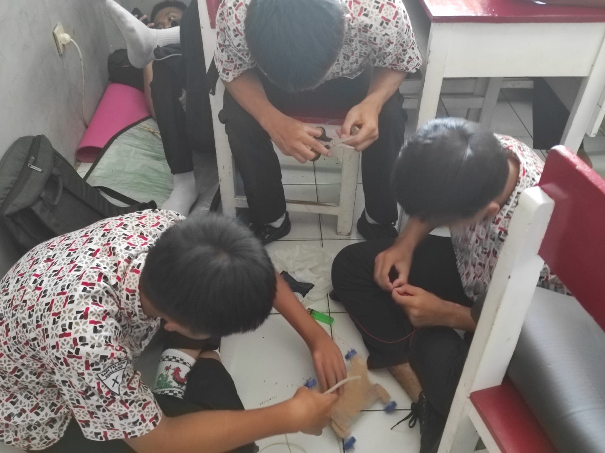
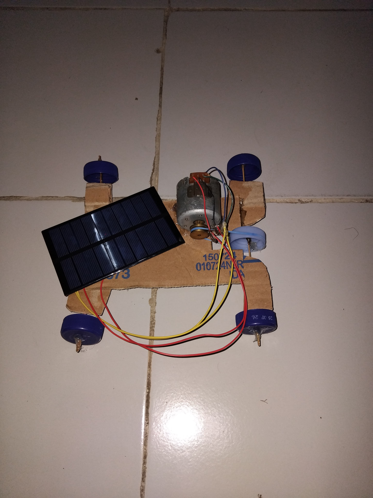
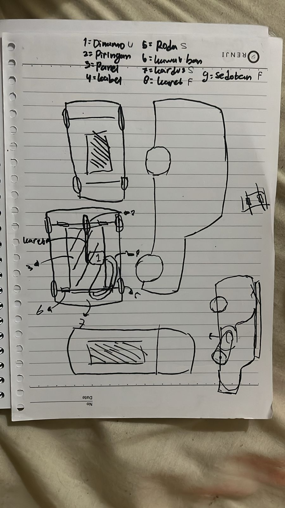
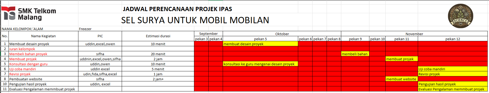

Kreasi Mobil-Mobilan dengan Panel Surya Mini
Tujuan Proyek
Membuat perangkat sederhana yang memanfaatkan energi matahari menggunakan panel surya untuk menghasilkan listrik, yang digunakan untuk menggerakkan dinamo pada model mobil mainan
Teori Pendukung
-
Panel Surya dan Prinsip Kerja:
Panel surya (fotovoltaik) mengubah energi matahari menjadi energi listrik. Ketika cahaya matahari mengenai sel fotovoltaik, elektron dalam material semikonduktor bergerak, menciptakan arus listrik. Daya yang dihasilkan berupa arus searah (DC).
-
Dinamo sebagai Mobil-mobilan DC:
Dinamo dalam konteks ini digunakan sebagai mobil-mobilan untuk menghasilkan gerak rotasi. Dinamo akan berputar ketika dialiri arus listrik.
-
Transmisi Daya:
Dinamo mentransfer energi mekanik ke roda melalui sistem roda gigi atau karet penghubung.
Alat dan Bahan
- Panel Surya Mini: Berkapatitas 5V–6V (cukup untuk menggerakkan motor dinamo kecil).
- Dinamo: Dinamo kecil dengan spesifikasi yang sesuai dengan daya output panel surya.
- Body Mobil Mainan: Dibuat dari kardus untuk menampung komponen.
- Roda: mengggunakan roda kecil (dari tutup botol) sebagai as roda.
- Sistem Penghubung: Menggunakan karet gelang atau roda gigi untuk mentransfer putaran dari dinamo ke roda.
- Kabel dan Solder: Untuk menyambungkan panel surya ke dinamo.
- Lem Tembak: Untuk merekatkan komponen pada body mobil.

Dokumentasi Proses Pembuatan


Kesimpulan
Proyek pembuatan mobil-mobilan bertenaga surya ini bertujuan untuk memberikan pemahaman praktis mengenai energi terbarukan dan teknologi ramah lingkungan. Melalui pengembangan kendaraan kecil yang menggunakan panel surya sebagai sumber energi, kami berhasil menunjukkan bahwa energi matahari dapat dimanfaatkan secara efektif untuk menggerakkan alat transportasi sederhana.
Desain Proyek

Desain dalam gambar mencakup beberapa elemen penting yang saling terhubung. Dimensi U menunjukkan ukuran yang diperlukan, sementara roda S menggambarkan jenis roda kecil yang mendukung mobilitas alat. Piringan berfungsi sebagai elemen struktural, dan penggunaan karet pada label 4 dan 6 penting untuk daya cengkeram dan perlindungan. Label 5 menandai bagian penting dari desain untuk memudahkan pemahaman. Sedotan F digunakan dalam sistem aliran, menambah fungsi desain secara keseluruhan. Desain ini mencerminkan alat kompleks dengan bahan dan ukuran spesifik untuk mencapai fungsionalitas optimal.
Tugas Anggota Kelompok
- [M.Rasydan Taqiyuddin]: [membuat proyek dan mendesain proyek]
- [Ecxell Scania]: [membuat proyek]
- [Samuel Adilla Christowner]: [mendesain proyek]
- [Rohfida Ayu Endriasari]: [membuat jadwal proyek]
- [Sifha Khummayroh]: [membuat web]
Jadwal Kegiatan Pelaksanaan Proyek
